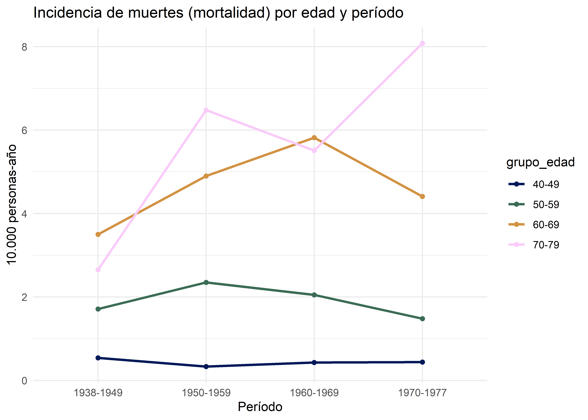
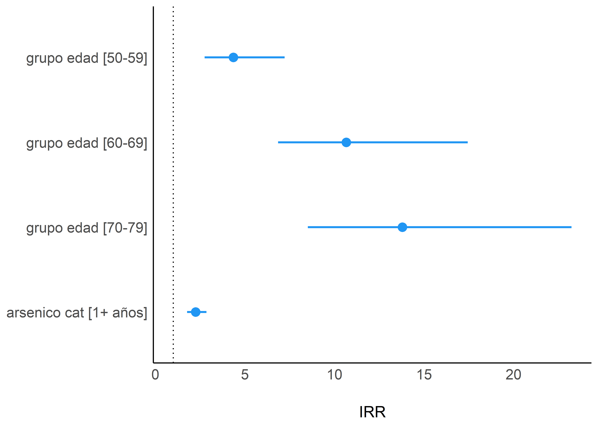

Regresión de Poisson
Christian Ballejo ![]()
Andrea Silva
Tamara Ricardo
Introducción
La distribución de Poisson es una distribución de probabilidad que se utiliza para modelar situaciones en las que contamos eventos discretos (número de accidentes, personas que sufren un infarto, visitas a una consulta médica, número de hijos, etc.). Estas situaciones comparten la característica de involucrar números finitos, relativamente pequeños y siempre positivos. Los eventos ocurren dentro de un intervalo definido, que suele ser de tiempo, aunque también puede referirse a otros tipos de intervalos, como el tamaño de la población. En esencia, la distribución de Poisson busca modelar el número de veces en que ocurre un evento durante un intervalo determinado.
La distribución de Poisson toma valores enteros no negativos: 0, 1, 2, 3, 4, etc. Tiene un único parámetro, lambda (\(\lambda\)), que representa tanto la media como la varianza en la distribución. Es decir, que cuanto más grande es el valor esperado, mayor dispersión tienen los valores.
Veamos cómo se aplica la regresión de Poisson en un estudio de cohortes. Supongamos que tenemos un estudio de cohortes clásico con dos grupos de comparación: un grupo expuesto y otro no expuesto. Para cada grupo se dispone el número de eventos (\(d\)) y la cantidad de personas-tiempo seguidas (\(n\)). Como recordarán, la tasa de incidencia (\(\lambda\)), la podemos calcular como el cociente:
\[ \lambda = \frac{d}{n} \]
Se asume que el número de eventos observados en cada grupo sigue una distribución de Poisson, con un valor esperado igual al producto de la tasa de incidencia por las personas-tiempo.
\[ E(d) = \lambda * n \]
Así, la probabilidad de observar \(d\) eventos se calcula como:
\[ P(x=d)= \frac{(\lambda n)^d e^{-\lambda n}}{d} \]
Omitiendo el desarrollo matemático, la regresión de Poisson consiste en establecer un modelo en el que diferentes covariables tienen un efecto lineal sobre el logaritmo de la tasa de incidencia del subgrupo correspondiente. Generalmente, el modelo de Poisson se expresa como:
\[ ln\lambda = \alpha+\beta_1x_1+\beta_2x_2+\dots+\beta_nx_n \qquad (*) \]
En forma equivalente, podemos expresar la tasa de incidencia como:
\[
\lambda=e^{\beta_0+\beta_1x_1+\dots+\beta_nx_n}
\] Siguiendo un razonamiento análogo al de la regresión logística, los parámetros del modelo pueden interpretarse como riesgos relativos (cocientes de tasas), representados como potencias de base \(e\). Formalmente, el riesgo relativo entre dos niveles de exposición se expresa como:
\[
RR_{x*/x}=e^{\sum^k_i=1\beta_i(x^*_i-x_i)}=\prod^k_{i=1}e^{\beta_i(x^*_i-x_i)}
\]Donde el símbolo \(\prod\) (productoria) implica una secuencia de productos.
Volviendo a la ecuación de la tasa de incidencia:
\[ \lambda = \frac{d}{n} \]
Si aplicamos logaritmo natural:
\[ ln(\lambda)=ln \frac{d}{n}=ln(d)-ln(n) \] Igualando con la ecuación \((*)\) tenemos:
\[ ln\lambda=\alpha+\beta_1x_1+\beta_2x_2+\dots+\beta_nx_n \] \[ ln(d)=ln(n)+\alpha+\beta_1x_1+\beta_2x_2+\dots+\beta_nx_n \]Al término \(ln(n)\) se lo denomina offset. En general, es un valor que debemos proporcionale al software para ajustar un modelo de Poisson y no se estima a partir de los datos.
Con la ecuación del modelo establecida, el siguiente paso es estimar los coeficientes y evaluar la calidad del ajuste. Los coeficientes se calculan utilizando métodos como la Estimación de Máxima Verosimilitud (MLE). A partir de estos coeficientes, podemos realizar inferencias, como el test de Wald para evaluar la hipótesis nula (\(H_0 : \beta_i = 0\)), calcular los intervalos de confianza (IC), y obtener los riesgos relativos (RR) con sus respectivos IC. La bondad de ajuste del modelo se evaluará a través de la función Deviance siguiendo el mismo esquema jerárquico de evaluación que en el caso de la regresión logística.
Supuestos del modelo de Poisson
A modo de resumen: el modelo de Poisson se utiliza para modelar el conteo de eventos que ocurren en intervalos de tiempo, en poblaciones, o incluso en espacios geográficos. La variable respuesta en este modelo toma valores enteros y positivos, y depende de un solo parámetro (\(\lambda\)).
Los principales supuestos del modelo son:
Independencia de las observaciones: Cada observación debe ser independiente de las demás. Esto significa que la ocurrencia de un evento no debe influir en la probabilidad de que ocurran otros eventos.
Constancia del parámetro \(\lambda\) a lo largo del tiempo: Para que se cumpla este supuesto, la media y la varianza deben ser iguales (equidispersión). Si \(\lambda\) no es constante, el modelo puede no ser adecuado.
Proporcionalidad de eventos al tamaño del intervalo: La cantidad de eventos en un intervalo dado debe ser proporcional al tamaño del intervalo. Esto significa que si duplicamos el intervalo, esperaríamos aproximadamente el doble de eventos.
Mutuamente excluyentes en el tiempo: No pueden ocurrir dos o más eventos en el mismo instante puntual. Cada evento debe ser individual y ocurrir en un momento distinto.
Una característica fundamental de la distribución de Poisson es que la media y la varianza deben ser iguales, lo que se conoce como el supuesto de equidispersión. Cuando la varianza observada en los datos excede la varianza esperada bajo este modelo, se enfrenta a un problema de sobredispersión. Un método común para detectar sobredispersión es calcular el coeficiente de variación (CV), definido como el cociente entre la varianza y la media estimadas. La sobredispersión es frecuente en la práctica y puede afectar la precisión de las estimaciones de los errores estándar de los coeficientes, por lo que es fundamental diagnosticarla y tratarla adecuadamente.
Otra situación en la que el modelo de Poisson puede no ser adecuado es cuando hay un número excesivo de ceros en los datos, es decir, cuando la frecuencia observada de ceros es mayor de lo que predice el modelo. Esto se debe a que el \(ln(0)\) no está definido. De manera particular, es posible que el mecanismo aleatorio que dio origen a los datos de conteo muestre una mayor concentración para algún valor específico, que puede ser el cero (como ocurre con algunas variables vinculadas a salud) o cualquier otro valor positivo. Esto implica que dicho valor tiene una mayor probabilidad de ocurrencia que la especificada por la distribución Poisson o cualquier otra distribución.
En el siguiente capítulo de esta unidad, exploraremos cómo detectar y manejar tanto la sobredispersión de los datos como el exceso de ceros, para asegurar que el modelo elegido sea el más adecuado para los datos analizados.
Construcción de un modelo de Poisson en R
La regresión de Poisson está implementada en R como parte de la familia de Modelos Lineales Generalizados (GLM). Esta técnica permite modelar variables de respuesta que representan conteos, asegurando que los valores predichos permanezcan dentro de límites razonables.
Un criterio importante en la selección de la función de enlace dentro de los GLM es garantizar que los valores ajustados del modelo sean coherentes con la naturaleza de la variable respuesta. Para la distribución de Poisson, la función de enlace predeterminada es el logaritmo natural. Esta elección asegura que los recuentos ajustados sean siempre mayores o iguales a cero, lo cual es esencial en el contexto de datos de conteo.
En la práctica, esto significa que el modelo ajustado con errores de Poisson y una función de enlace logarítmica linealiza la relación entre la variable respuesta (conteos) y las variables independientes, permitiendo una interpretación clara y coherente de los resultados.
Como es de imaginar utilizaremos la misma función general glm(), cambiando los argumentos en familia y enlace. La sintaxis básica de esta función, contenida en el paquete stats de R, es:
Dado que el enlace logarítmico es el predeterminado para la familia de Poisson, podemos omitir su especificación:
glm(formula, family = poisson, data = datos)donde:
- formula: al igual que en los casos anteriores, describe la fórmula del modelo a ajustar con la estructura:
\[ variable\_dependiente \sim variable\_indepen_1 + variable\_indepen_2 +\dots+ variable\_indepen_n \]
family: indica la familia de distribuciones utilizadas y su función de enlace.
data: especifica el nombre de la base de datos (dataframe) que contiene las variables del modelo.
Para obtener un resumen de los resultados del modelo se utiliza la función summary():
summary(modelo)El resumen del objeto de regresión de Poisson incluye:
Call: fórmula del modelo
Deviance Residuals: muestra la distribución de los residuos (mediana, mínimo, máximo y percentilos 25-75) obtenidos en la última iteración
Coefficients: Incluye los coeficientes del intercepto y de las variables independientes, junto con los errores estándar, el valor z (estadístico de Wald) y el p-valor correspondiente.
Dispersion parameter for poisson family taken to be 1: indica que el modelo asume el supuesto de equidispersión (media igual a varianza).
Null deviance: devianza del modelo nulo, que solo incluye al intercepto.
Residual deviance: devianza del modelo ajustado.
AIC: criterio de información de Akaike.
Number of Fisher Scoring iterations: cantidad de iteraciones realizadas.
El objeto de regresión creado con glm() pertenece a las clases "glm" y "lm" y está compuesto por varios componentes que pueden ser accedidos usando el nombre del modelo seguido del signo $. Algunos de los componentes más relevantes son:
modelo$coefficients: Vector de coeficientes del modelo, también accesible mediantecoef(modelo).modelo$residuals: Vector de residuos obtenidos en la última iteración.modelo$fitted.values: Valores ajustados medios, obtenidos mediante la transformación de los predictores lineales usando la inversa de la función de enlace.modelo$family: Familia de distribuciones utilizada en la construcción del modelo.modelo$deviance: Devianza del modelo ajustado.modelo$aic: Criterio de información de Akaike (AIC).modelo$null.deviance: Devianza del modelo nulo.
Ejemplo práctico en R
Para ilustrar las funciones y la metodología de análisis en R, utilizaremos el archivo de datos “cohorte_ocupacional.txt”, que contiene resultados de un estudio de cohortes que investiga la asociación entre las muertes respiratorias y la exposición al arsénico en la industria, ajustando por varios otros factores de riesgo.
Comenzaremos activando los paquetes necesarios:
Cargamos la base de datos y exploramos su estructura:
### Carga datos
datos <- read_csv2("datos/cohorte_ocupacional.txt")
### Explora datos
glimpse(datos)Rows: 114
Columns: 6
$ muertes <dbl> 2, 0, 0, 0, 2, 1, 0, 0, 0, 1, 1, 0, 2, 1, 0, 0, 7, 0, 0, …
$ persona_anio <dbl> 30753, 4858, 4782, 3373, 39816, 6561, 1903, 125, 9368, 19…
$ grupo_edad <chr> "40-49", "40-49", "40-49", "40-49", "40-49", "40-49", "40…
$ periodo <chr> "1938-1949", "1938-1949", "1938-1949", "1938-1949", "1938…
$ comienzo <chr> "1925 y post", "1925 y post", "1925 y post", "1925 y post…
$ arsenico <chr> "<1 año", "1-4 años", "5-14 años", "15+ años", "<1 año", …Las variables de estudio son:
muertes: Número de muertes por persona-años (persona_anio) en cada categoría. Nuestra variable de interés es la tasa de incidencia de mortalidad.grupo_edad: Grupo de edad de los sujetos.periodo: Período de empleo de los sujetos.comienzo: Año de inicio del empleo.arsenico:Nivel de exposición al arsénico durante el período de estudio.
Las variables grupo_edad, periodo, comienzo y arsenico son de tipo caracter y debemos convertirlas a factor. Podemos hacer esto manualmente para cada variable, o usar el comando across() que permite modificar varias columnas a la vez:
Revisemos como quedaron los niveles de cada factor:
# grupo etario
levels(datos$grupo_edad)[1] "40-49" "50-59" "60-69" "70-79"# periodo
levels(datos$periodo)[1] "1938-1949" "1950-1959" "1960-1969" "1970-1977"# comienzo
levels(datos$comienzo)[1] "< 1925" "1925 y post"# arsenico
levels(datos$arsenico)[1] "<1 año" "1-4 años" "15+ años" "5-14 años"Ahora vamos a explorar los datos de la base organizando la información de persona-años por edad y período:
## Creo tabla
datos |>
count(periodo, grupo_edad, wt = persona_anio) |>
pivot_wider(names_from = grupo_edad, values_from = n) |>
# formato de tabla
tibble()# A tibble: 4 × 5
periodo `40-49` `50-59` `60-69` `70-79`
<fct> <dbl> <dbl> <dbl> <dbl>
1 1938-1949 92171 64211 40056 15072
2 1950-1959 149493 102234 48960 18511
3 1960-1969 161234 136627 75552 27240
4 1970-1977 90730 115040 79366 33410Ahora hacemos lo mismo para el número de muertes y calculamos la incidencia por 10000 personas-año para cada celda:
## Creo objeto para personas-años
personas_anios <- datos |>
count(periodo, grupo_edad,
wt = persona_anio,
name = "p.a")
### Creo tabla
datos |>
count(periodo, grupo_edad, wt = muertes) |>
left_join(personas_anios) |>
mutate(incidencia = round(n/p.a*10000,2)) |>
select(-n, -p.a) |>
tibble()# A tibble: 16 × 3
periodo grupo_edad incidencia
<fct> <fct> <dbl>
1 1938-1949 40-49 0.54
2 1938-1949 50-59 1.71
3 1938-1949 60-69 3.5
4 1938-1949 70-79 2.65
5 1950-1959 40-49 0.33
6 1950-1959 50-59 2.35
7 1950-1959 60-69 4.9
8 1950-1959 70-79 6.48
9 1960-1969 40-49 0.43
10 1960-1969 50-59 2.05
11 1960-1969 60-69 5.82
12 1960-1969 70-79 5.51
13 1970-1977 40-49 0.44
14 1970-1977 50-59 1.48
15 1970-1977 60-69 4.41
16 1970-1977 70-79 8.08Podemos visualizar la incidencia de muertes ajustadas por periodo y grupo de edad mediante un gráfico. Aunque el código exacto se omite por razones de extensión, los interesados pueden solicitarlo al equipo docente.

En el gráfico anterior, podemos observar que el grupo de mayor edad tiende a tener una incidencia más alta, lo que es consistente con la expectativa de que el riesgo de muerte aumenta con la edad. Sin embargo, para obtener una comprensión más precisa de esta relación, es crucial ajustar por otras covariables. La regresión de Poisson nos permitirá examinar cómo la exposición al arsénico y otros factores afectan la mortalidad, controlando simultáneamente por la edad y otros posibles factores de confusión.
Offset
Dado que en este ejemplo nos interesa modelar la tasa de incidencia vamos a necesitar incorporar dentro del modelo un termino de desplazamiento (en inglés “offset”).
Creamos el modelo saturado para trazar iteraciones backward:
El término offset = log(persona_anio) en el modelo de regresión de Poisson permite que la variable persona_anio actúe como el denominador en el cálculo de las tasas de mortalidad. La transformación logarítmica es necesaria porque la función de enlace del modelo de Poisson es el logaritmo.
Para obtener un resumen del modelo ajustado, utilizamos la función summary(), que proporciona una visión detallada de los resultados del modelo:
summary(modelo)
Call:
glm(formula = muertes ~ periodo + grupo_edad + arsenico, family = poisson,
data = datos, offset = log(persona_anio))
Coefficients:
Estimate Std. Error z value Pr(>|z|)
(Intercept) -10.6363 0.2756 -38.594 < 2e-16 ***
periodo1950-1959 0.4087 0.2126 1.923 0.0545 .
periodo1960-1969 0.4413 0.2022 2.183 0.0290 *
periodo1970-1977 0.3181 0.2063 1.542 0.1231
grupo_edad50-59 1.4565 0.2458 5.925 3.12e-09 ***
grupo_edad60-69 2.3527 0.2392 9.837 < 2e-16 ***
grupo_edad70-79 2.6024 0.2578 10.096 < 2e-16 ***
arsenico1-4 años 0.7949 0.1582 5.024 5.06e-07 ***
arsenico15+ años 1.0468 0.1775 5.896 3.72e-09 ***
arsenico5-14 años 0.6070 0.2059 2.948 0.0032 **
---
Signif. codes: 0 '***' 0.001 '**' 0.01 '*' 0.05 '.' 0.1 ' ' 1
(Dispersion parameter for poisson family taken to be 1)
Null deviance: 376.02 on 113 degrees of freedom
Residual deviance: 116.69 on 104 degrees of freedom
AIC: 355.47
Number of Fisher Scoring iterations: 5Este primer modelo, que incluye todas las covariables, muestra que casi todos los niveles de las variables son significativos respecto a las categorías de referencia.
Bondad de ajuste
Para evaluar la bondad de ajuste del modelo y verificar la presencia de sobredispersión, podemos utilizar la función check_overdispersion() del paquete performance. Esta función ayuda a identificar si los errores del modelo presentan una dispersión excesiva en comparación con la esperada bajo la distribución de Poisson:
check_overdispersion(modelo)# Overdispersion test
dispersion ratio = 1.116
Pearson's Chi-Squared = 116.079
p-value = 0.197El componente de Pearson's Chi-Squared se calcula a partir de la devianza del modelo. En las pruebas de bondad de ajuste, buscamos que el valor de p sea mayor a 0,05, lo cual indica que el modelo se ajusta adecuadamente a los datos.
Selección de variables explicativas
Para mejorar el modelo anterior y asegurarnos de que incluimos solo las variables significativas, procederemos a eliminar variables una por una en una primera ronda de iteración mediante un proceso backwards manual.
# (-) arsénico
mod1 <- glm(muertes ~ periodo + grupo_edad,
offset = log(persona_anio),
family = poisson,
data = datos)
# (-) grupo etario
mod2 <- glm(muertes ~ periodo + arsenico,
offset = log(persona_anio),
family = poisson,
data = datos)
# (-) periodo
mod3 <- glm(muertes ~ grupo_edad + arsenico,
offset = log(persona_anio),
family = poisson,
data = datos) Para comparar los modelos podemos usar la función compare_perfomance() del paquete performance.
compare_performance(mod1, mod2, mod3, metrics = "common")# Comparison of Model Performance Indices
Name | Model | AIC (weights) | BIC (weights) | Nagelkerke's R2 | RMSE
----------------------------------------------------------------------
mod1 | glm | 396.6 (<.001) | 415.8 (<.001) | 0.877 | 2.208
mod2 | glm | 534.7 (<.001) | 553.9 (<.001) | 0.496 | 3.470
mod3 | glm | 355.0 (>.999) | 374.2 (>.999) | 0.926 | 1.595Buscamos el menor AIC, que en este caso es mod3 (modelo con variables grupo_edad y arsenico).
En la segunda fase de iteración partimos de este modelo y quitamos otra variable, lo que signica en nuestro ejemplo construir regresiones simples:
Volvemos a comparar:
compare_performance(mod3, mod4.1, mod4.2, metrics = "common")# Comparison of Model Performance Indices
Name | Model | AIC (weights) | BIC (weights) | Nagelkerke's R2 | RMSE
------------------------------------------------------------------------
mod3 | glm | 355.0 (>.999) | 374.2 (>.999) | 0.926 | 1.595
mod4.1 | glm | 394.5 (<.001) | 405.4 (<.001) | 0.871 | 2.181
mod4.2 | glm | 537.9 (<.001) | 548.8 (<.001) | 0.451 | 3.416El mejor modelo continúa siendo mod3, por lo que vamos a probar su bondad de ajuste:
check_overdispersion(mod3)# Overdispersion test
dispersion ratio = 1.128
Pearson's Chi-Squared = 120.713
p-value = 0.172El p valor del test confirma un buen ajuste. Procedemos a chequear significancia de las variables explicativas:
summary(mod3)
Call:
glm(formula = muertes ~ grupo_edad + arsenico, family = poisson,
data = datos, offset = log(persona_anio))
Coefficients:
Estimate Std. Error z value Pr(>|z|)
(Intercept) -10.2972 0.2237 -46.032 < 2e-16 ***
grupo_edad50-59 1.4624 0.2454 5.960 2.53e-09 ***
grupo_edad60-69 2.3502 0.2380 9.873 < 2e-16 ***
grupo_edad70-79 2.5987 0.2564 10.136 < 2e-16 ***
arsenico1-4 años 0.8041 0.1577 5.099 3.42e-07 ***
arsenico15+ años 0.9976 0.1758 5.673 1.40e-08 ***
arsenico5-14 años 0.5957 0.2059 2.893 0.00381 **
---
Signif. codes: 0 '***' 0.001 '**' 0.01 '*' 0.05 '.' 0.1 ' ' 1
(Dispersion parameter for poisson family taken to be 1)
Null deviance: 376.02 on 113 degrees of freedom
Residual deviance: 122.25 on 107 degrees of freedom
AIC: 355.04
Number of Fisher Scoring iterations: 5Todos los niveles de las variables son significativos respecto a sus niveles de referencia:
tbl_regression(mod3, exponentiate = T)| Characteristic | IRR | 95% CI | p-value |
|---|---|---|---|
| grupo_edad | |||
| 40-49 | — | — | |
| 50-59 | 4.32 | 2.72, 7.16 | <0.001 |
| 60-69 | 10.5 | 6.73, 17.2 | <0.001 |
| 70-79 | 13.4 | 8.27, 22.7 | <0.001 |
| arsenico | |||
| <1 año | — | — | |
| 1-4 años | 2.23 | 1.63, 3.02 | <0.001 |
| 15+ años | 2.71 | 1.90, 3.79 | <0.001 |
| 5-14 años | 1.81 | 1.19, 2.67 | 0.004 |
| Abbreviations: CI = Confidence Interval, IRR = Incidence Rate Ratio | |||
Traducidos a riesgo, mediante la exponenciación de los coeficientes, observamos que los diferentes categorías de años de exposición al arsénico no varían entre sí. Esto nos hace pensar que puede valer la pena agruparlo en solo dos niveles:
## Recategoriza arsénico
datos <- datos %>%
mutate(arsenico_cat = if_else(
arsenico == "<1 año", "<1 año", "1+ años") |>
as.factor())
## Modelo con arsénico recategorizado
mod5 <- glm(muertes ~ grupo_edad + arsenico_cat,
offset = log(persona_anio),
family = poisson,
data = datos)
## Compara modelos
compare_performance(mod3, mod5, metrics = "common")# Comparison of Model Performance Indices
Name | Model | AIC (weights) | BIC (weights) | Nagelkerke's R2 | RMSE
----------------------------------------------------------------------
mod3 | glm | 355.0 (0.350) | 374.2 (0.034) | 0.926 | 1.595
mod5 | glm | 353.8 (0.650) | 367.5 (0.966) | 0.924 | 1.613El mod5 tiene mejor performance que el modelo anterior. Chequeamos sobredispersión:
check_overdispersion(mod5)# Overdispersion test
dispersion ratio = 1.147
Pearson's Chi-Squared = 125.038
p-value = 0.14El ajuste continúa siendo bueno.
Chequeamos significancia:
summary(mod5)
Call:
glm(formula = muertes ~ grupo_edad + arsenico_cat, family = poisson,
data = datos, offset = log(persona_anio))
Coefficients:
Estimate Std. Error z value Pr(>|z|)
(Intercept) -10.3112 0.2233 -46.169 < 2e-16 ***
grupo_edad50-59 1.4702 0.2453 5.994 2.04e-09 ***
grupo_edad60-69 2.3661 0.2372 9.976 < 2e-16 ***
grupo_edad70-79 2.6238 0.2548 10.297 < 2e-16 ***
arsenico_cat1+ años 0.8109 0.1210 6.699 2.09e-11 ***
---
Signif. codes: 0 '***' 0.001 '**' 0.01 '*' 0.05 '.' 0.1 ' ' 1
(Dispersion parameter for poisson family taken to be 1)
Null deviance: 376.02 on 113 degrees of freedom
Residual deviance: 125.02 on 109 degrees of freedom
AIC: 353.8
Number of Fisher Scoring iterations: 5Las variables incluídas son significativas.
En esta etapa, aceptaríamos el mod5 como el mejor modelo, ya que tiene el AIC más pequeño entre todos los modelos que hemos probado.
tbl_regression(mod5, exponentiate = T)| Characteristic | IRR | 95% CI | p-value |
|---|---|---|---|
| grupo_edad | |||
| 40-49 | — | — | |
| 50-59 | 4.35 | 2.74, 7.21 | <0.001 |
| 60-69 | 10.7 | 6.85, 17.4 | <0.001 |
| 70-79 | 13.8 | 8.51, 23.2 | <0.001 |
| arsenico_cat | |||
| <1 año | — | — | |
| 1+ años | 2.25 | 1.77, 2.85 | <0.001 |
| Abbreviations: CI = Confidence Interval, IRR = Incidence Rate Ratio | |||
Interpretación de los resultados
Concluimos que las personas expuestas al arsénico durante al menos un año tienen un riesgo 2,25 veces mayor de muerte por enfermedad respiratoria en comparación con aquellas no expuestas. Para entender cómo se obtiene este cálculo, consideremos que en los modelos de Poisson, la estructura de compensación (offset) definida como log(persona_anio) transforma el resultado en el logaritmo de la densidad de incidencia.
El término offset = log(persona_anio) en el modelo de Poisson convierte el recuento de eventos en una densidad de incidencia, ajustada por el tiempo de seguimiento. Esto permite que el modelo estime tasas de incidencia de acuerdo con el tiempo de exposición.
Los coeficientes del modelo de Poisson se interpretan en términos de tasas de incidencia. En particular, el coeficiente asociado a la variable de exposición al arsénico se transforma mediante la exponenciación para obtener el riesgo relativo. Si el coeficiente de la variable arsenico es \(\beta\), el riesgo relativo (RR) se calcula como \(e^\beta\). En nuestro caso, si \(e^\beta = 2,25\), esto indica que las personas expuestas al arsénico durante al menos un año tienen un riesgo 2,25 veces mayor de muerte por enfermedad respiratoria en comparación con las no expuestas.
Densidad de incidencia
Para calcular la densidad de incidencia esperada en una población específica, utilizamos el modelo ajustado. Por ejemplo, para una población de 100.000 personas de entre 40 y 49 años expuestas al arsénico durante menos de un año, podemos usar el modelo mod5. En R, esto se hace creando un nuevo conjunto de datos con las características deseadas y utilizando la función predict() para obtener la tasa de incidencia ajustada:
## Genera nuevos datos
newdata <- tibble(grupo_edad = "40-49",
arsenico_cat = "<1 año",
persona_anio = 100000)
## Predice datos
predict(object = mod5, newdata = newdata, type = "response") 1
3.325736 Esta población tendría una densidad de incidencia estimada de 33,26 por 100.000 personas-año.
Riesgo relativo
En un estudio de casos y controles, como los vistos en la Unidad 4, el OR se utiliza para comparar la prevalencia de exposición entre casos y controles. En un estudio de cohorte, este valor es igual a la relación entre las probabilidades de contraer una enfermedad entre el grupo expuesto y el no expuesto. La razón de los riesgos para los dos grupos se denomina entonces “razón de riesgo” o riesgo relativo (RR).
En un estudio de cohorte real, los sujetos no siempre tienen la misma duración de seguimiento. El riesgo relativo ignora la duración del seguimiento. Por tanto, no es una buena medida de comparación del riesgo entre los dos grupos.
Razón de densidad de incidencia
En este ejercicio, todos los sujetos agrupan sus tiempos de seguimiento y este número se denomina “tiempo-persona”, que luego se utiliza como denominador del evento, lo que da como resultado una “densidad de incidencia”.
Comparar la densidad de incidencia entre dos grupos de sujetos por su estado de exposición es más justo que comparar los riesgos crudos. La relación entre las densidades de incidencia de dos grupos se denomina razón de densidades de incidencia (RDI), que es una forma mejorada de riesgo relativo.
En el mod5, para calcular la razón de densidad de incidencia entre los sujetos expuestos al arsénico durante uno o más años frente a los expuestos durante menos de un año, podemos dividir la incidencia entre los primeros por la del segundo grupo.
## Genera nuevos datos
newdata <- tibble(grupo_edad = rep("40-49", 2),
arsenico_cat = c("<1 año", "1+ años"),
persona_anio = rep(100000, 2))
## Densidad de incidencia
di <- predict(object = mod5, newdata = newdata, type = "response")
## Razón densidad de incidencia
rdi.arsenico <- di[2] / di[1]
rdi.arsenico 2
2.249864 El código anterior comienza agregando una nueva fila al dataframe newdata que tiene lo mismo que la primera fila, excepto que la variable arsenico_cat es “1+ años”.
A continuación, se calculan las respuestas o densidades de incidencia de las dos condiciones.
La RDI se obtiene luego de la división de las densidades de incidencia para arsenico_cat = “<1 año” con arsenico_cat = “1+ años”. Una forma más corta de obtenerla es mediante el coeficiente de la variable específica arsenico, utilizando R base o el paquete gtsummary.
tbl_regression(mod5, exponentiate = T,
include = "arsenico_cat")| Characteristic | IRR | 95% CI | p-value |
|---|---|---|---|
| arsenico_cat | |||
| <1 año | — | — | |
| 1+ años | 2.25 | 1.77, 2.85 | <0.001 |
| Abbreviations: CI = Confidence Interval, IRR = Incidence Rate Ratio | |||
También podemos mostrar la salida mediante un gráfico usando el ecosistema de paquetes easystats, tal como vimos en la unidad anterior:
model_parameters(mod5, exponentiate = T) |>
plot()
De Irala, Martínez-González, y Guillén Grima (2001)
Gordis (2017)
Hernández-Ávila (2011)
Kim (2019)
Kleinbaum et al. (1988)
Nolasco (2016)
Pérez Hoyos (2001)
Salinas-Rodríguez, Manrique-Espinoza, y Sosa-Rubí (2009)
(Wickham et al. 2019; Lüdecke et al. 2022; Sjoberg et al. 2021)